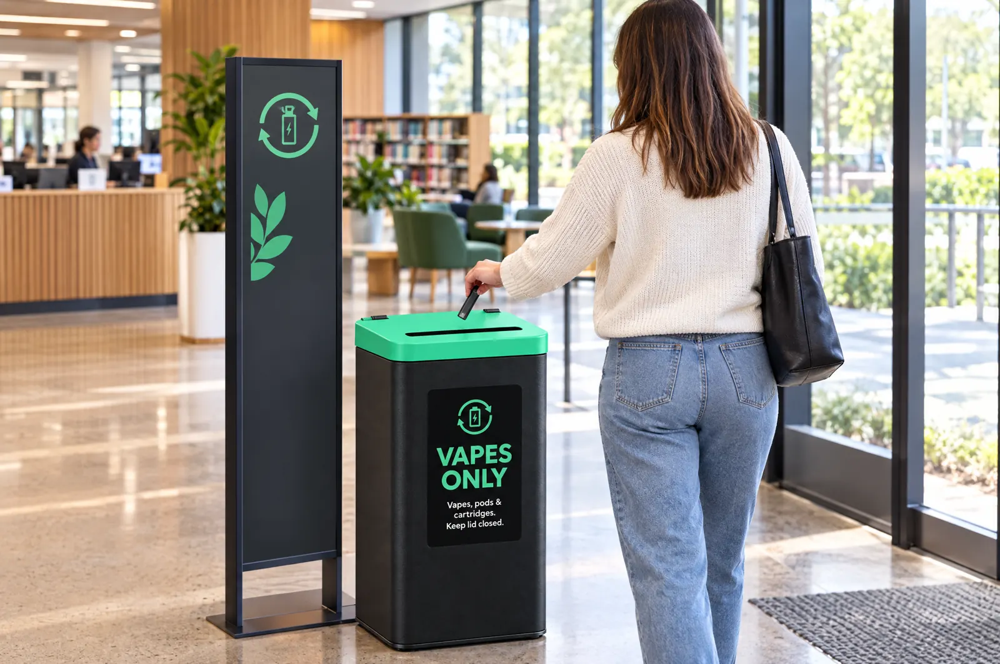

Give residents somewhere to take vapes.
When there’s nowhere obvious to take a vape, it ends up in the kerbside bin and then in your collection trucks. Council drop-off points fix that, and we handle everything after the bin.

vapes handed in at one Victorian council’s drop-off points.
The City of Casey opened Victoria’s first free council vape drop-off points in November 2023. Across five locations, residents have returned 15,482 vapes, and about 24 other Victorian councils have followed with collection points or events.1
of vapes collected at Casey’s Narre Warren service centre alone
City of Casey, April 20261
Fires, the landfill ban and litter.
Fewer truck and facility fires
Victorian fire services attend at least one battery-related fire a week.3 Vapes in kerbside bins are a hidden source your crews and contractors can’t sort out by eye.
A lawful option for residents
E-waste, including e-cigarettes, has been banned from Victorian landfill since 2019.7 Residents need a convenient alternative to the bin.
Less vape litter
Casey reported that a lack of drop-off points had led to more vapes being littered across the municipality.2
A ready-to-run collection program.
You choose the sites. We supply, service and recycle.
Collection points
Lidded bins with clear resident signage at service centres, libraries, leisure centres or transfer stations.
Scheduled servicing
Bins collected and swapped on a schedule or when full, across every site.
Safe processing
Vapes handled as battery waste and separated so materials can be recovered.
Events & amnesties
Support for one-off collection events, and amnesties for schools and youth services.
Start a vape collection program.
Tell us how many sites you’re considering and we’ll come back with a plan.
- City of Casey, “Casey residents lead the charge on safe vape disposal”, April 2026. casey.vic.gov.au
- City of Casey, “Vape Recycling Initiative”. casey.vic.gov.au. Other figures: see sources on the fire risk page.